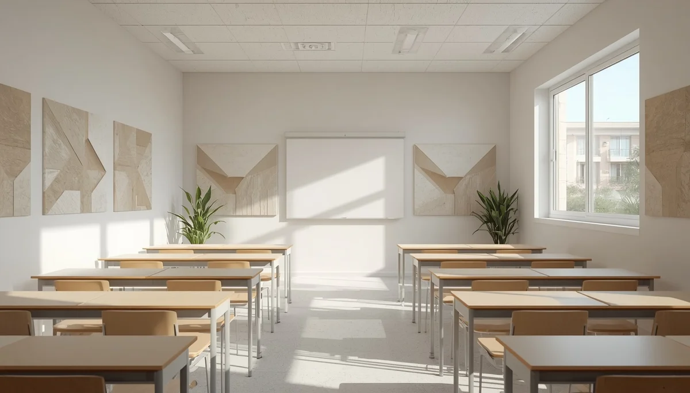

Adaptaciones metodológicas y acústicas en el aula
El diseño tradicional de las aulas escolares, caracterizado por superficies duras, eco y una alta densidad de alumnos, suele ser especialmente hostil para los estudiantes que presentan un trastorno de procesamiento auditivo central (TPAC). Mitigar estas barreras ambientales no requiere de reformas complejas, sino de la aplicación consciente de medidas acústicas y metodológicas.
Modificaciones en el espacio y control del ruido
Una de las medidas más eficaces consiste en situar al alumno en una ubicación preferente cerca del profesor, reduciendo la distancia y la interferencia de los compañeros situados a su espalda. Asimismo, pequeños gestos como colocar protectores de fieltro en las patas de las sillas y mesas disminuyen drásticamente el ruido de fricción ambiental.
Estrategias de comunicación docente
A nivel metodológico, resulta fundamental que el profesor capte la atención del alumno antes de emitir una consigna importante, hable de frente articulando con claridad y complemente las instrucciones orales con apoyos visuales o escritos en la pizarra, reduciendo así la sobrecarga cognitiva auditiva.
"Pequeños cambios en la acústica ambiental y en la forma de transmitir las instrucciones marcan una diferencia abismal en la comodidad y el aprendizaje diario del alumno."
Tecnología de apoyo: sistemas de modulación de frecuencia
En casos donde la afectación es más acusada, el uso de sistemas FM o micrófonos inalámbricos de campo sonoro permite que la voz del docente llegue de forma directa y nítida a los oídos del estudiante, neutralizando el ruido de fondo del aula.
➔ Volver al índice de Procesamiento Auditivo Central